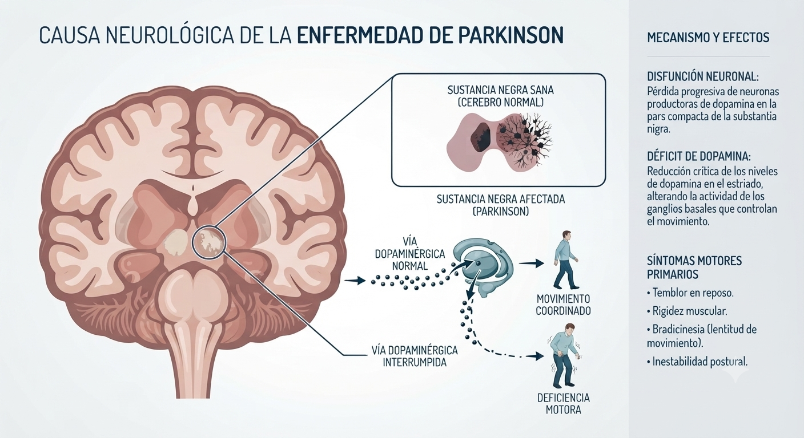

Caso Clínico: Enfermedad de Parkinson
Análisis de caso: Carlos, 68 años

Descripción del Caso
Carlos, de 68 años, fue diagnosticado con Enfermedad de Parkinson hace dos años. Actualmente se encuentra en la Etapa II de la Escala de Hoehn y Yahr, lo que implica presencia de síntomas en ambos lados del cuerpo, aunque mantiene un grado importante de independencia funcional.
Fisiopatología
La enfermedad se origina por la pérdida progresiva de neuronas productoras de dopamina en la Sustancia Negra del mesencéfalo. Esto genera alteraciones en el funcionamiento de los ganglios basales, estructuras esenciales para iniciar, coordinar y regular los movimientos voluntarios.
Manifestaciones Clínicas
- Temblor: Presencia de temblor de reposo en la mano derecha.
- Rigidez: Aumento del tono muscular.
- Bradicinesia: Lentitud generalizada en la ejecución de movimientos.
Impacto en el Desempeño Cotidiano
Estas alteraciones comprometen la precisión y coordinación fina, dificultando tareas como: abrochar botones, cortar alimentos, manipular cubiertos, escribir y manejar objetos pequeños. Adicionalmente, el tiempo necesario para preparar sus alimentos ha aumentado, requiriendo apoyo ocasional de su esposa.
Perfil Ocupacional y Participación
La pérdida de precisión en sus manos ha obligado a Carlos a abandonar sus partidas semanales de ajedrez, una actividad altamente significativa para él. Esta situación le ha generado sentimientos de frustración y una notable disminución en su participación social.
Áreas de Ocupación Afectadas
- Actividades Básicas de la Vida Diaria: Vestuario y alimentación.
- Actividades Instrumentales de la Vida Diaria: Preparación de alimentos.
- Ocio: Juego de ajedrez.
- Participación social: Aislamiento progresivo.
- Desempeño ocupacional general: Disminución de la independencia.